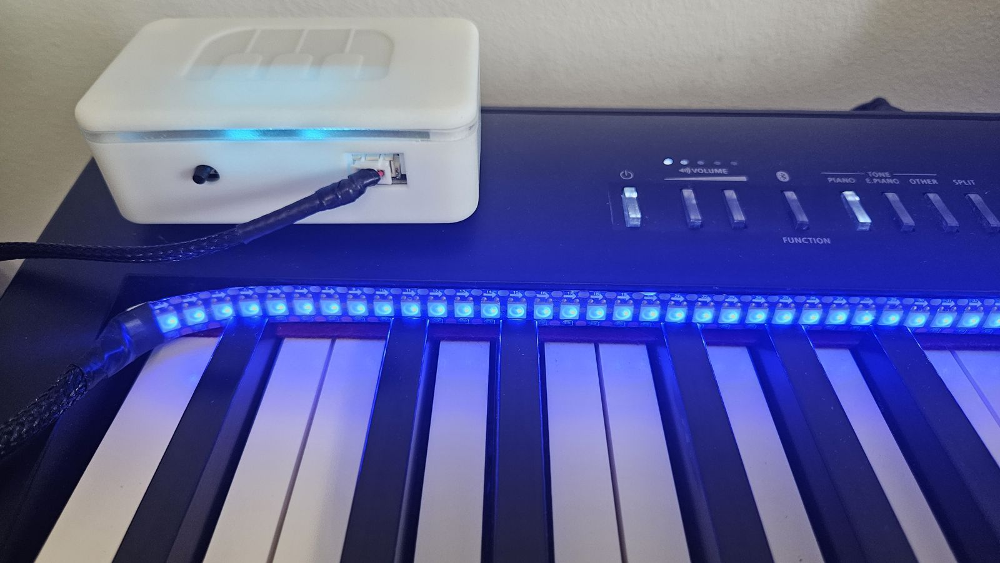

Things I build.
Hi, I'm Paweł. I make small hardware and software projects, mostly around music and learning.

LEDsplay
Raspberry Pi software that lights up the keys of your digital piano as you play, and shows you which key comes next.
See the project →